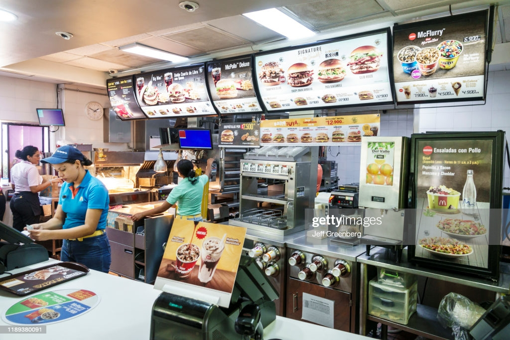
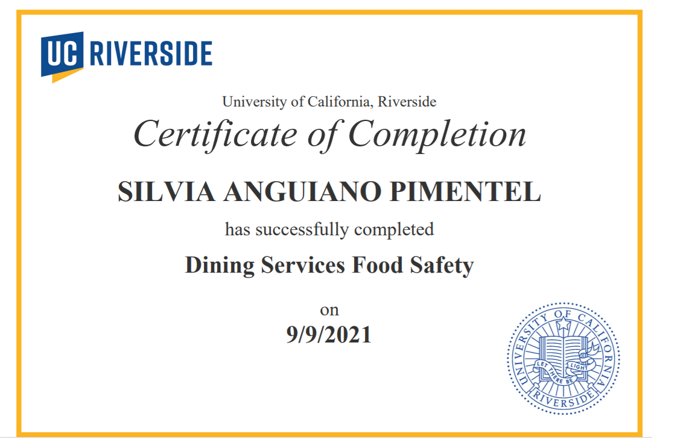
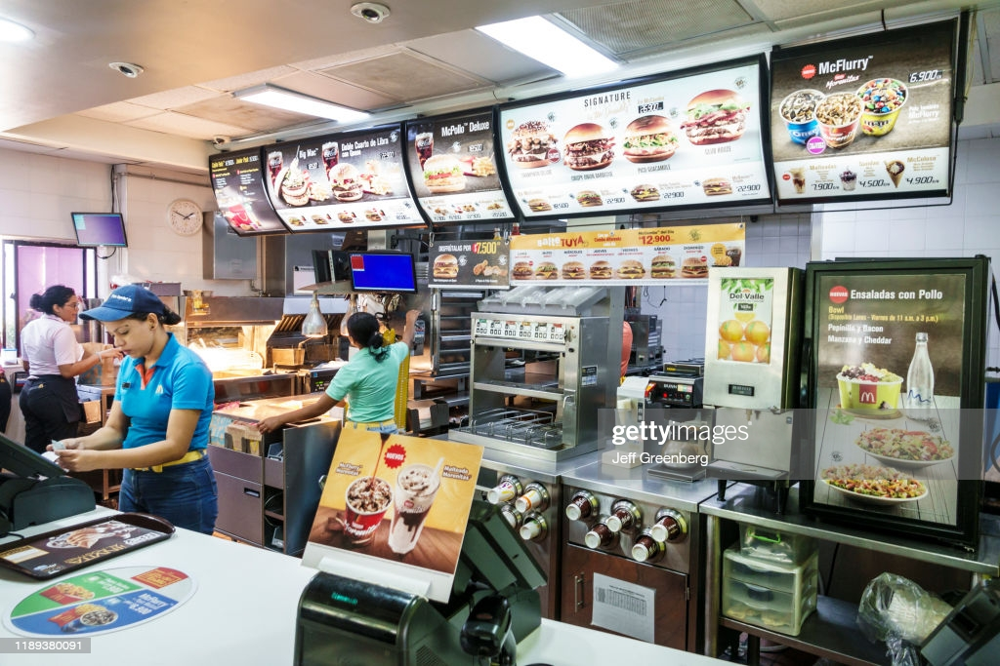
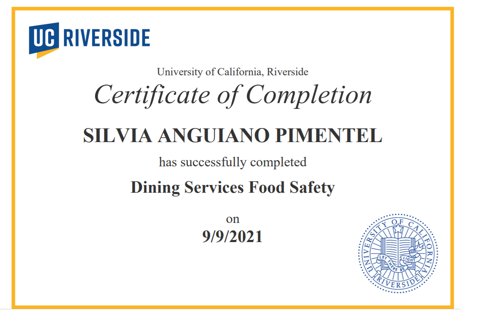

Silvia Anguiano Pimentel
Languages Major
To briefly introduce myself, I am a second-year majoring in Languages with prospects in second-major in Political Science concentrating in International Affairs. Studying abroad made me think critically about the world around me, waking up my eagerness to learn and grow, in addition to sparking my interest in international affairs, foreign policy, and diplomacy. I've had the opportunity to volunteer to counsel new arrival students in my high school by sharing my personal experience as an English learner, specifically regarding my transition from studying abroad and aided the ESL class for one hour, twice a week to help students by tutoring them and assisting the instructor in developing curriculum, check assignments, and translate when needed. My communication and adaptability skills have been put on test when I worked at McDonald's Inc., the fast-food restaurant chain, by treating customers and staff members and working in a fast-paced environment.
Experience
Customer Service- Crew
• Operated various tools and equipment to prepare food
• Maintain cleanliness and ensure quality control
•Worked under pressure in a fast-paced environmen
Teacher Assistant — Academic Language Development (ALD)
• Aid the ALD beginner class for one hour, twice a week to help students by tutoring them, encouraging them to have conversations in English with each other and me. Assisted in developing curriculum, checking assignments, and translating when needed.
Education
UC Riverside
University of California Riverside
Portfolio




 